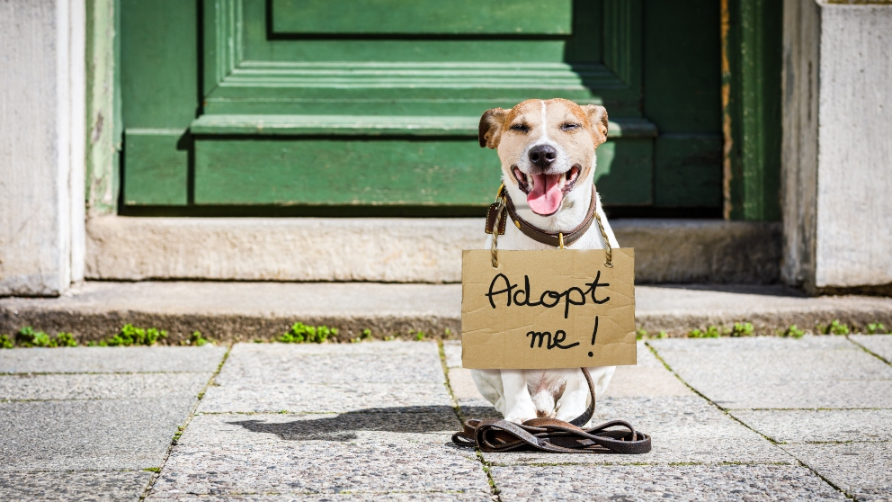
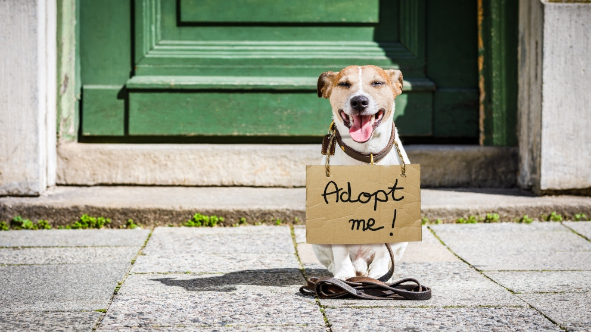

Experiencias de adopciones
Sabrina y Fabella
Todas las protectoras lo sabemos, es la típica historia de nunca acabar. Este es un claro ejemplo entre los miles que habrán en el país y en todo el mundo de lo que suele pasar a menudo. Esta es la historia de Sabrina y Falabella, que entre varios perros y gatos, fueron también abandonados a su suerte por aquellos que no tomaron en serio lo que es adoptar y cuidar a una mascota de por vida.
Es evidente, un animal no es un juguete, ni un objeto que puedes devolver cuando se nos plazca, y por sobre todo, son seres vivos sintientes, que sufren y sienten desamparo.
Podemos confirmar, que afortunadamente, luego de que ellas tuvieran que sobrevivir en las calles pasando necesidades entre todos los animales, que por fin pudieron llegar a tener un nuevo hogar del lado de su nueva dueña que es responsable y cariñosa; Mariana Vince.
Lucky
Segundo, luce como una pantera de talle small. Como la mayoría de los animales en la calle, sufre la intemperie, las lluvias y el estrés de sobrevivir en el día a día. Por eso, los vecinos le construyeron una pequeña casa de manera manual, y los peatones de vez en cuando llenan los tarros con agua y comida.
Sin embargo, es evidente que nuestro pequeño Lucky se merece un mejor destino, se nos parte el corazón. Luego de varias visitas al veterinario, desparasitados y limpiado las heridas, podemos decir que su bienestar ha mejorado por mucho.
Aún está en adopción, si le interesa podrá encontrarlo entre nuestras fichas. Como todos los demás animales, cada uno lleva una historia, una historia de lucha. Nos alegraría que encuentre un hogar digno, tanto como los demás que están esperando ansiosos por un nuevo hogar cálido lleno de amor y cuidado.
Hope
Lo llamamos Hope, porque es esperanza por una vida mejor. Fue hallado herido tras una colisión en un accidente automovilístico. A diferencia de todas las historias anteriores, su situación fue algo distinta, porque la vida le arrebató el cariño de sus dueños de manera inesperada.
Y son cosas de la vida que suelen suceder.
Si a un ser humano le es arduo enfrentar el fallecimiento de un ser querido, ¿cómo sería para un animal? Hope es un perro que sabemos que tiene mucho para dar a pesar de sus ojos tristes y su mirada gacha.
Más allá de las lesiones que no son físicas, que no se muestran al ojo humano, sabemos que afortunadamente pudo llegar a tener una segunda oportunidad, con la persona correcta regreso a ser feliz y obtener el bienestar que tanto merecía, que con el correr de los meses y la paciencia de un dueño paciente, volvió una vez, más a sonreir.
¡Todo el esfuerzo valió la pena! 
